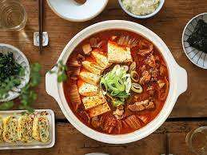

Kimchi-Jigeh Recipe

Ingredients
- 6 cups water
- 3 cups napa cabbage kim chee, brine reserved
- 2 cups cubed fully cooked luncheon meat (e.g. Spam)
- 3 tablespoons chili powder
- salt, to taste
- ground black pepper, to taste
How to cook
- In a large pot, stir together the water, kim chee, reserved kim chee brine, Spam, chili powder, salt, and pepper.
- Cover the pot and bring to a boil over medium-high heat.
- Simmer for 20 minutes or until the kim chee cabbage is translucent and soft.
Back to Home